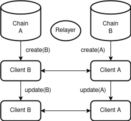
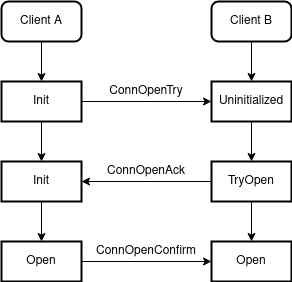
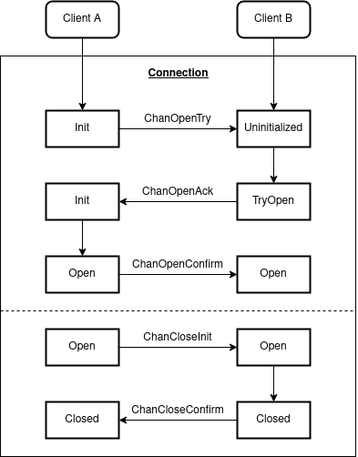
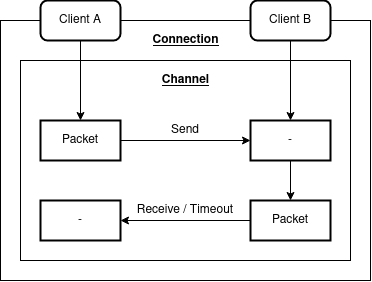

Interchain Standards
The Inter-Blockchain Communication (IBC) protocol is an architecture designed for Cosmos to allow participating processes to share state. Each module is a deterministic process, such as a replicated state machine with fast transaction finality. Unlike sharded architectures (such as Polkadot), IBC does not provide pooled security.
The specification builds on several assumptions to reason about the capabilities of the protocol. For instance, it assumes fast finality for any adopted consensus mechanism - Tendermint & GRANDPA are two such examples. These processes should also allow for cheaply-verifiable consensus transcripts and basic key / value functionality.
Clients
A light client provides a way to verify the expected state of a consensus mechanism without directly participating in it’s process. Given a starting state and a “validity predicate”, it can follow the consensus transcripts output by another chain to easily verify their correctness. By submitting a transaction inclusion proof it should then be possible for the light client to verify the sub-state of the canonical chain at any particular height.
Let us assume we have two independent networks, each with a component that can update it’s internal state based on externally submitted data. In this case, our component is a light client that can verify headers from another chain with a compatible consensus algorithm. For each block agreed upon by the respective network, a corresponding header should be registered by the light client embedded in the counter-chain.
 Client
Out-of-bounds, we can expect some relaying process to sign and broadcast these transactions between networks.
Connections
With two stateful clients eliciting up-to-date headers, we now require authorization semantics. That is, both chains need to understand how they can speak with each other. In the following state machine diagram, an actor transacting with chain A will trigger the initialization step to connect chain B. Each subsequent datagram in the handshake will then require commitment proofs to affirm the counter-chain state.
 Connection
Each connection is eternal and uniquely identified on a first-come-first-serve basis.
Ports & Modules
After establishing a permanent connection between two chains, we would like to begin passing messages. Before we can do that however, we need to identify what we are actually going to send data to.
A module is an abstraction used to denote a sub-component of a particular state machine. We will see a particular example of this later on, but for now let us imagine these as smart contracts. Each module may bind to one or more ports to allow incoming traffic to be routed correctly. Additionally, a module can connect to multiple outbound ports bound by external modules. They may be released at any point in time.
To draw a familiar analogy, imagine you are requesting HTTP data from a web server. The server will typically serve requests from port 80 which the client will automatically default to. The client will then bind to an ephemeral port in order for the return traffic to be routed correctly.
Channels
Port allocation and ownership facilitates the permissioning of channels to modules. Through a connection, an actor may open a channel between two modules by linking the source and destination ports. Analogous to a TCP / UDP connection, a channel can be ordered or unordered and is typically ephemeral. The state machine for establishing a channel can be seen in the following diagram:
 Channel
It is important to note that after initialization, each subsequent step requires a proof from the counter-chain to verify against it’s corresponding light client. It can determine this by checking the connection object for the source network.
Packets
Once a channel is established, we can send packets containing arbitrary data payloads for use with higher level protocols. We do however require a partial interface defined as follows:
| Field | Description |
|---|---|
| sequence | order of sends and receives |
| timeoutHeight | consensus height expiry |
| timeoutTimestamp | timestamp expiry |
| sourcePort | sending port |
| sourceChannel | sending channel |
| destPort | receiving port |
| destChannel | receiving channel |
| data | opaque value |
It is a module’s responsibility to send and receive packets. Each step in the following state machine diagram should additionally validate connection and channel state, port ownership and timeout. On send we store a constant sized commitment to the packet data and timeout which should be verified by the receiving chain. Finally, the calling module should delete the packet commitment on acknowledgement.
 Packet
An ordered channel should optionally check that the sequence numbers are monotonically increasing.
Asset Transfer
An example payload for application layer usage is fungible asset transfer via a two-way peg. Specifically, we want to preserve:
- ownership
- fungibility
- total supply
Let us assume an account on chain A wants to send tokens to an account on chain B. After channel setup, both chains should recognize a particular escrow address. The desired path can then be summarized as follows:
A -> B
- A transfers
amountof tokens fromsenderto the escrow address for the source channel. - A sends packet to B with
denomination,amountandrecipient. - B receives packet and mints
amountof tokens torecipient.
B -> A
- B burns
amountof tokens owned bysender. - B sends a packet to A with
denomination,amountandrecipient. - A receives packet and transfers
amountof tokens from the escrow account torecipient.
Note: The specification does not handle the “diamond problem”, where tokens are transferred through chains:
A -> B -> D -> C -> A.